| No. | Nombre completo del integrante | Carné |
|---|---|---|
| 1 | ||
| 2 | ||
| 3 | ||
| 4 |
EntregaEste documento es el manual de usuario y la descripción de lo realizado para el proyecto final. El código fuente completo se guarda en el drive compartido del grupo; el enlace está en la portada y en la sección 7.
El Simulador de Máquina de Turing es una aplicación web que permite definir una máquina de Turing determinista M = (Q, Σ, Γ, δ, q₀, B, F) y observar cómo procesa una palabra sobre una cinta de 50 celdas. Cumple con las dos formas de operación que pide la guía del proyecto:
| Requisito | Detalle |
|---|---|
| Sistema operativo | Windows 10 u 11. El servidor local usa PowerShell, que ya viene con Windows: no hay que instalar nada. |
| Navegador | Microsoft Edge, Google Chrome o Firefox en una versión reciente. |
| Internet | Opcional. Solo se usa para descargar las fuentes tipográficas; sin conexión el simulador funciona igual con fuentes del sistema. |
| Código fuente | La carpeta del proyecto, descargada del drive compartido (sección 7). |
==================================================
Simulador · Máquina de Turing
==================================================
Abierto en: http://localhost:5577/
Carpeta: D:\Downloads\PROYECTO AUTÓMATAS\
Deja esta ventana abierta mientras usas el simulador.
Para detenerlo, cierra la ventana o presiona Ctrl+C.
Ventana del servidor (herramientas/servidor.ps1). Si el 5577 está ocupado, prueba solo el 5578, 5579, … y muestra la dirección abierta.
Live Server usa el puerto 5500 por defecto. En la computadora donde se desarrolló el proyecto ese puerto ya lo ocupa el servicio tnslsnr de Oracle Database (el listener, que abre 127.0.0.1:5500 para la consola web de Oracle), así que Live Server no podía abrir su servidor y la página no cargaba. Por eso INICIAR.bat usa el 5577 (y prueba los siguientes si está ocupado) y Live Server quedó configurado en el 5510.
ImportanteNo abras los archivos .html con doble clic (dirección file://). Las pantallas comparten los datos de la máquina mediante el almacenamiento del navegador (sessionStorage y localStorage), y algunos navegadores lo bloquean en archivos sueltos. Usa siempre INICIAR.bat o Live Server.
Es la primera pantalla. Muestra la definición del proyecto y las dos tarjetas para elegir el modo de ejecución. La cinta de la tarjeta superior es decorativa: el cabezal la recorre de un lado a otro.
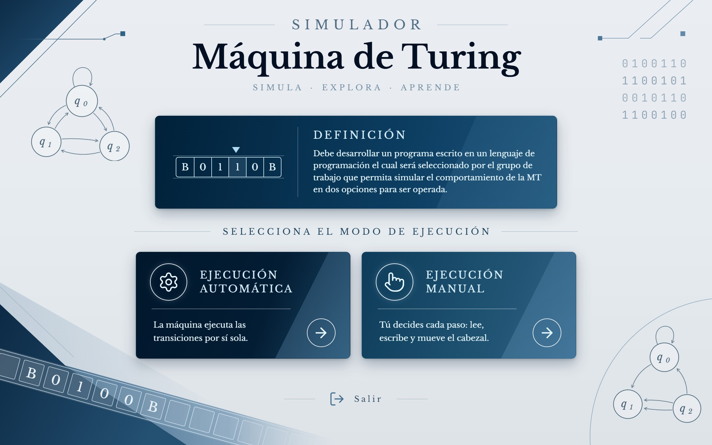
Al entrar, el simulador pregunta cómo se desea iniciar. Las opciones están agrupadas igual que en la guía:
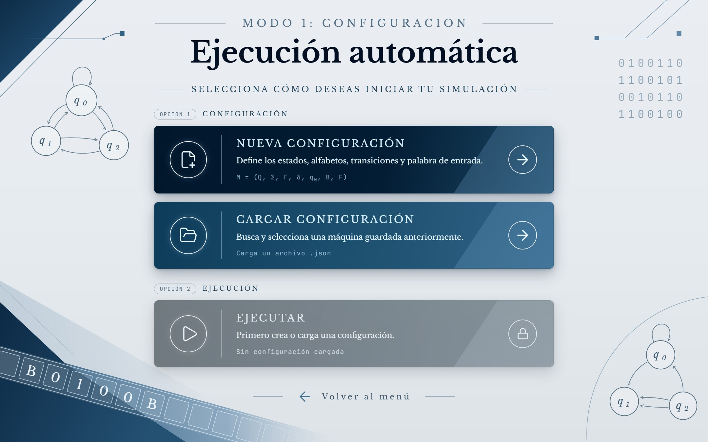
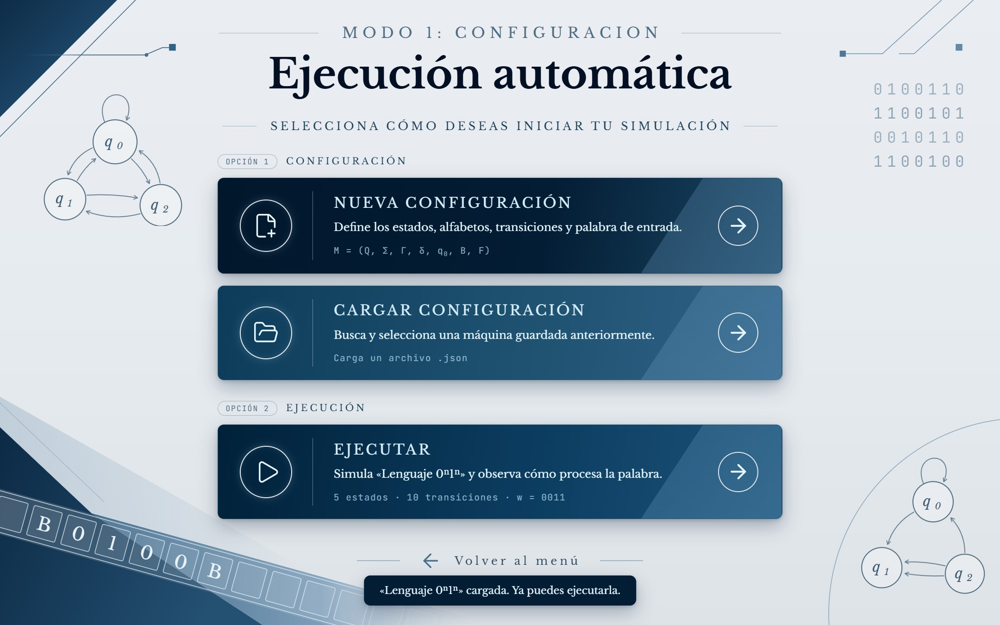
El formulario pide, en cinco secciones numeradas, todos los componentes formales de la máquina. Cada sección muestra debajo del campo cómo quedó el conjunto (por ejemplo Q = { q0, q1, q2 } |Q| = 3) y marca en rojo lo inválido o repetido. Con Usar ejemplo se llena con la máquina que reconoce el lenguaje 0ⁿ1ⁿ, útil para probar.
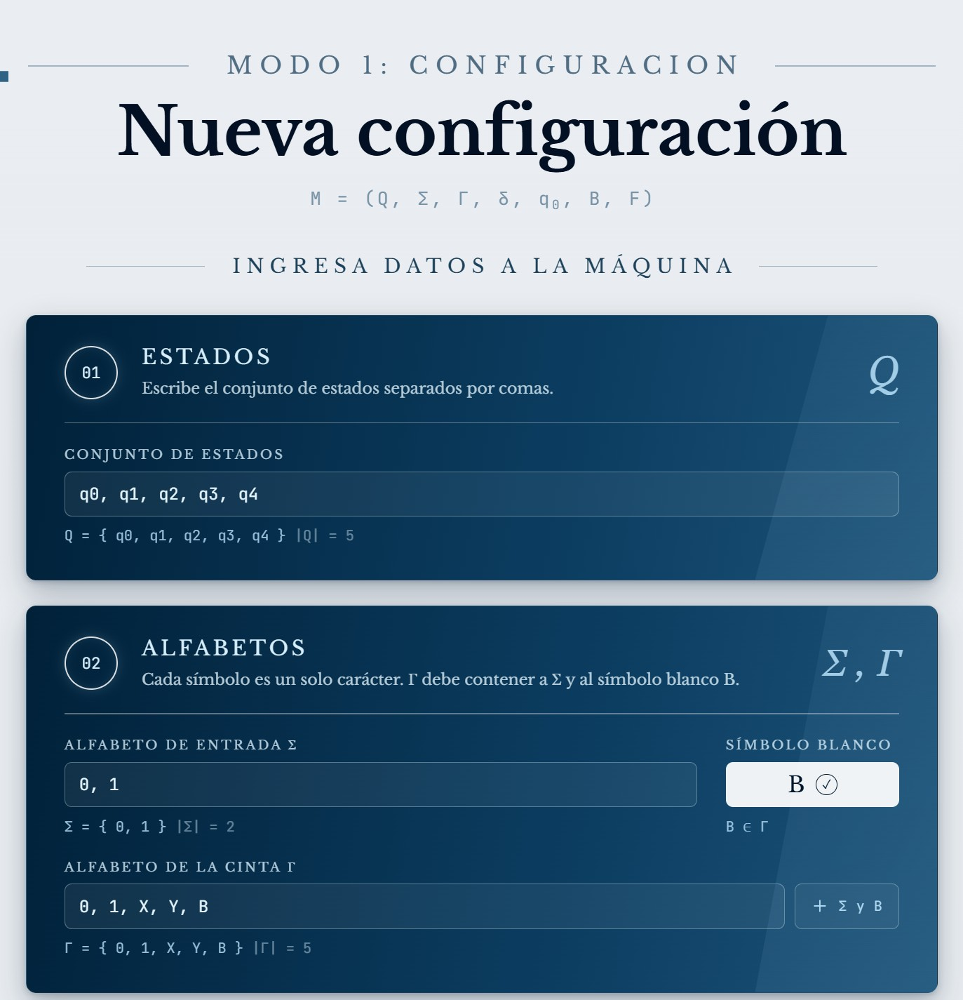
Escribe los estados separados por comas, por ejemplo q0, q1, q2, q3, q4. Los nombres solo pueden tener letras, números o guion bajo, y no se pueden repetir.
Σ es el alfabeto de entrada y Γ el alfabeto de la cinta. Cada símbolo es un solo carácter y se separa con comas.
Con los estados escritos aparecen como botones. Se elige un estado inicial q₀ y uno o varios estados finales F (donde la máquina acepta la palabra).
Cada fila es δ(qi, X) = (qj, Y, D): en el estado qi, si lee X, pasa a qj, escribe Y y se mueve D. Las opciones salen de Q y de Γ, y el movimiento es R (derecha), L (izquierda) o S (quedarse).
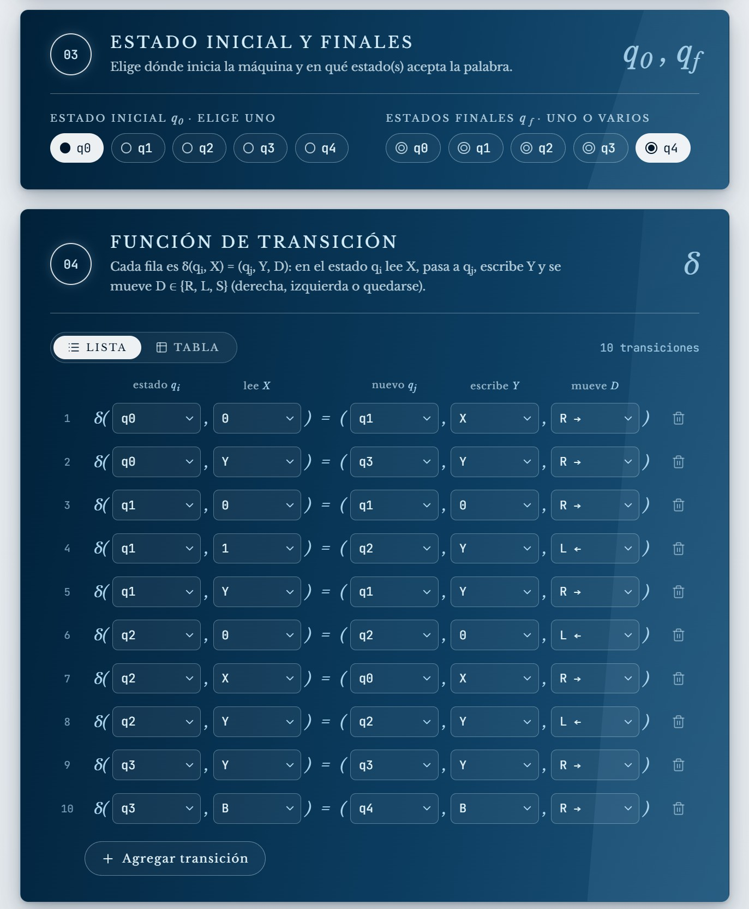
El botón Tabla muestra δ como una matriz: filas = estados, columnas = símbolos de Γ. La flecha → marca el estado inicial, el asterisco * los finales y la raya — las combinaciones sin transición (ahí la máquina se detiene). Haciendo clic en una celda se edita esa transición. Las dos vistas muestran los mismos datos.
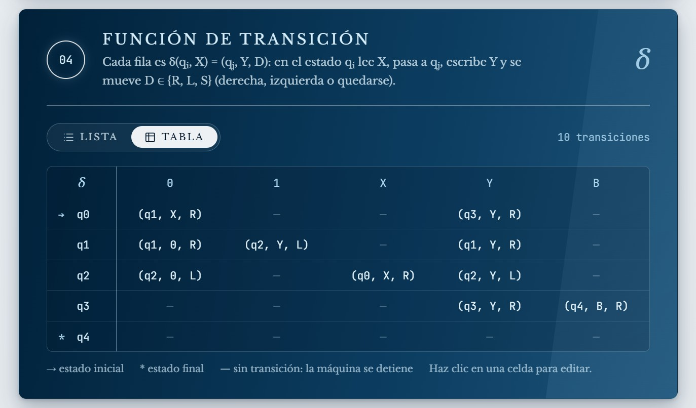
Es la cadena que se coloca en la cinta de 50 celdas a partir de la celda 1 (la celda 0 queda en blanco), con un máximo de 49 símbolos. Vacía equivale a la palabra vacía ε; una B deja una celda en blanco. A la derecha se ve cómo iniciará la cinta y dónde queda el cabezal.
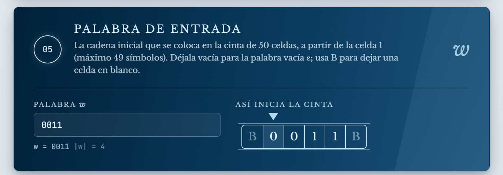
La última sección resume la máquina en notación formal. Se le puede dar un nombre (opcional), que también define el nombre del archivo. Al presionar Guardar configuración:
Limpiar vacía el formulario y Volver regresa al inicio del Modo 1.
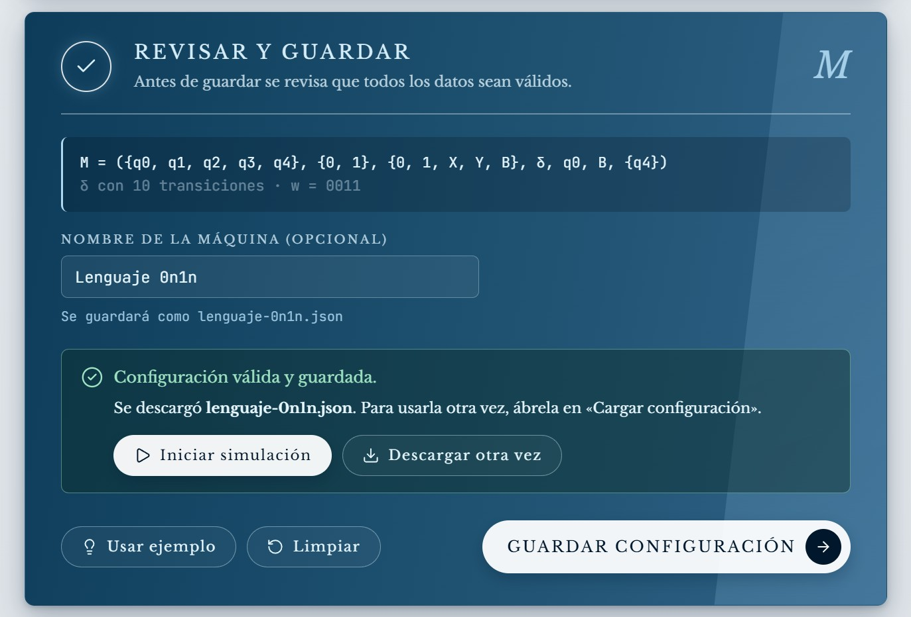
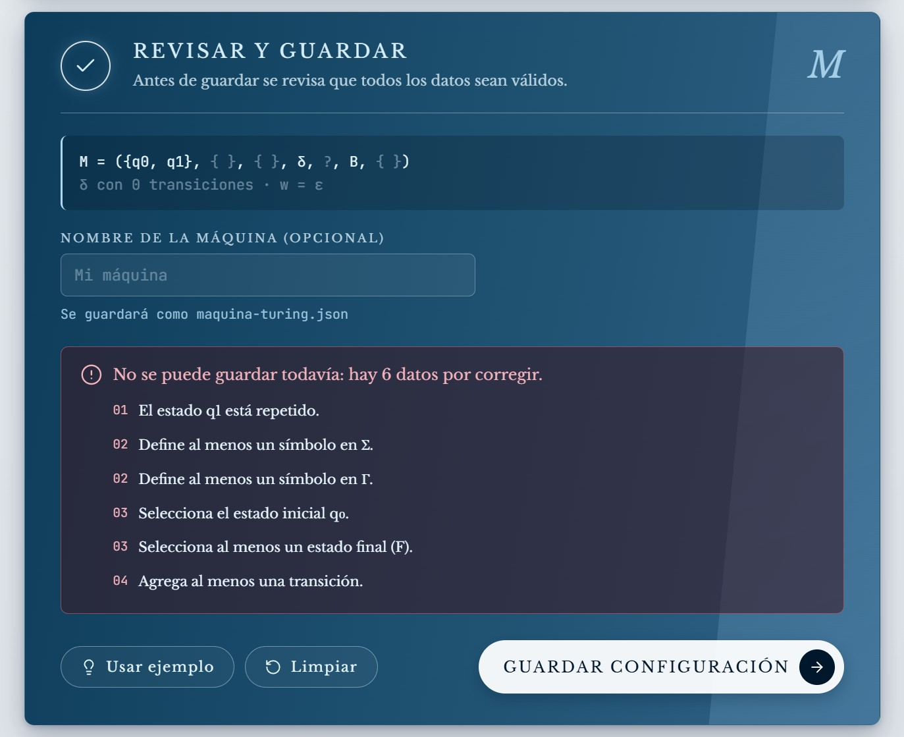
Al presionar Ejecutar (o Iniciar simulación desde el formulario) se abre la simulación gráfica. Arriba aparece el nombre de la máquina y el selector Automática / Paso a paso.
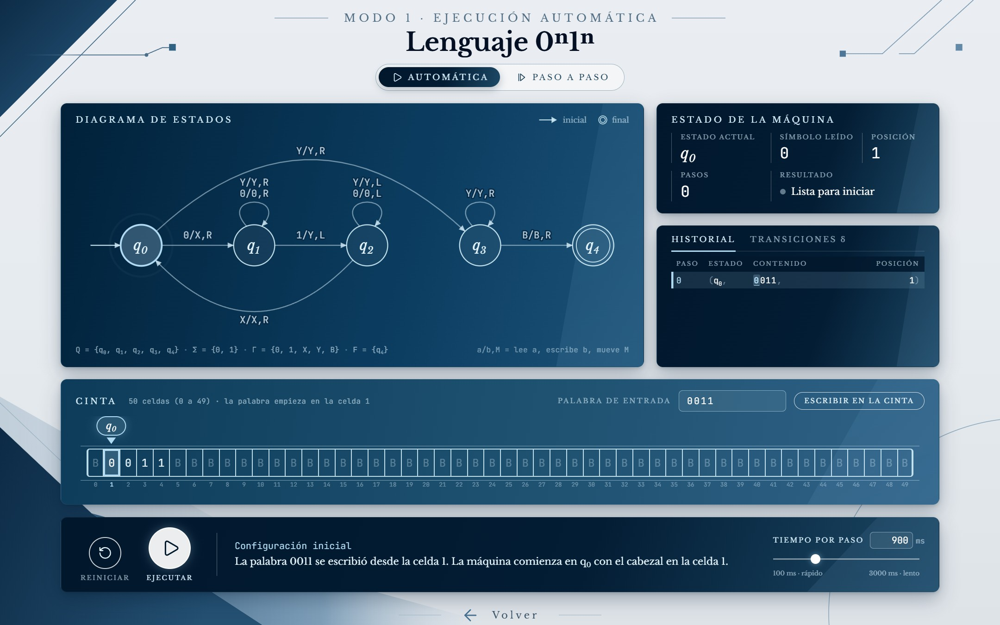
La pantalla se divide en cinco paneles:
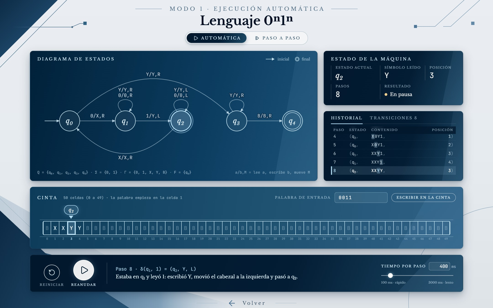
Con Paso a paso la máquina avanza solo cuando el usuario lo pide: Siguiente (→ o Espacio) aplica una transición y Anterior (←) regresa al paso previo. Debajo de la explicación aparece cuál será la siguiente transición, por ejemplo Siguiente: δ(q0, 0) = (q1, X, R).
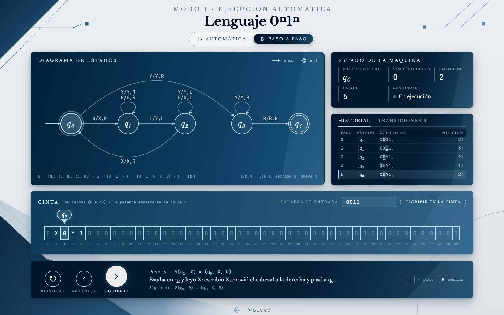
| Resultado | Cuándo ocurre |
|---|---|
| Aceptada | La máquina entra a un estado final de F. |
| Rechazada | No hay transición para el par (estado, símbolo) y el estado actual no es final. |
| Fuera de la cinta | Una transición intenta mover el cabezal fuera de las celdas 0 a 49. |
| Sin detenerse | Llega a 2000 pasos sin parar (por ejemplo, un ciclo infinito). |
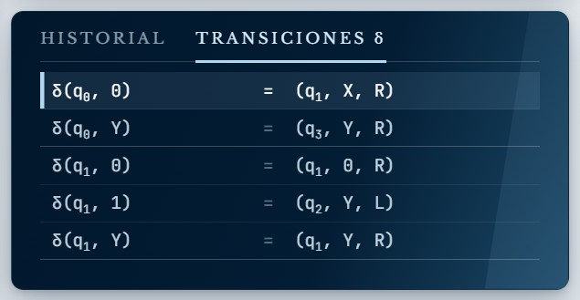
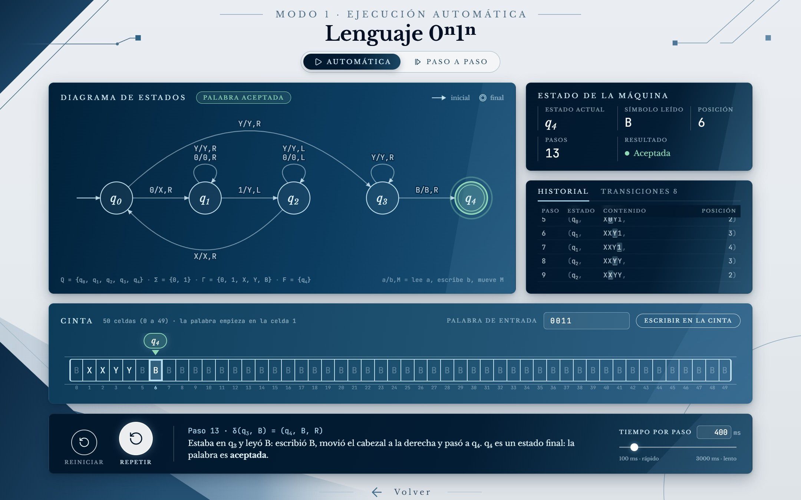
En este modo no se escribe la función δ: se construye paso a paso con las decisiones del usuario. Tiene dos pantallas: la preparación (alfabeto, estados y cinta inicial) y el sandbox, donde se ejecuta a mano.
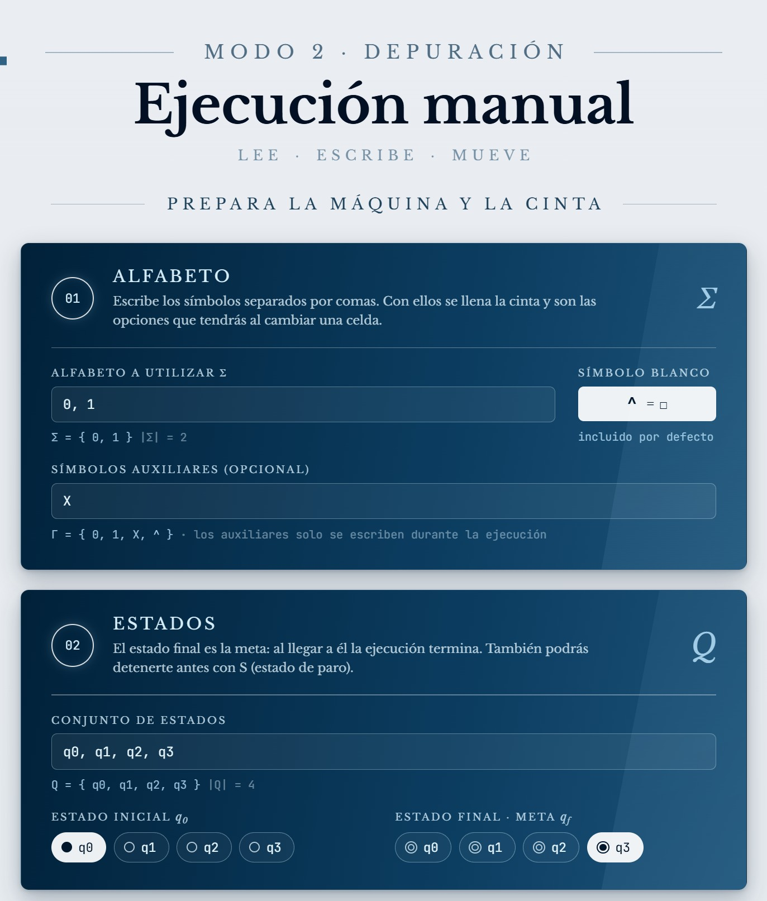
Así se cumple el punto 2 de la guía: se determina el estado final o se puede quedar en estado de paro y finalizar.
La cinta tiene 50 celdas (0 a 49) y el cabezal empieza en la celda 1, igual que en el Modo 1. Hay tres formas de llenarla:
Debajo de la cinta se resume su contenido: qué celdas ocupa y cuántos blancos quedaron en medio. En Cintas grabadas aparecen las cintas guardadas con Grabar cinta durante una ejecución (5.6), para usarlas como cinta inicial; Abrir archivo carga una cinta grabada que se haya descargado como .json.
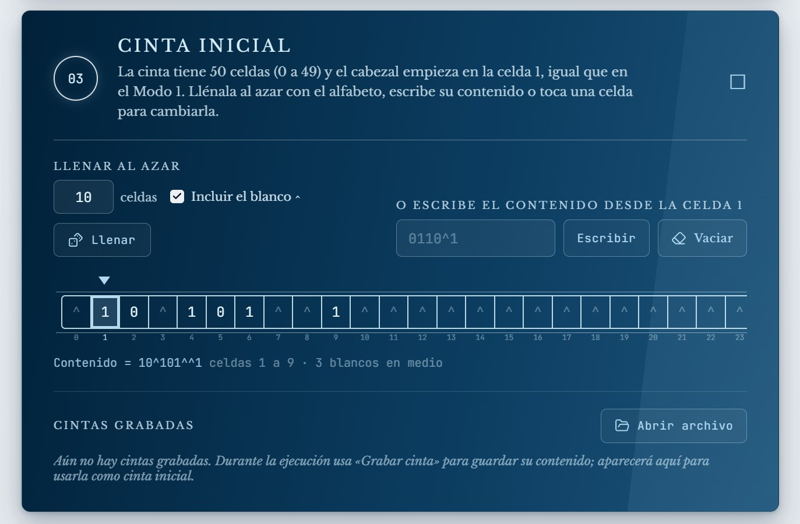
Resume la máquina como M = (Q, Σ, Γ, δ, q₀, ^, {qf}); δ queda pendiente porque se construye en el sandbox. Se puede poner un nombre a la sesión, que será el nombre del archivo al exportar. Restablecer vuelve a los valores iniciales y Comenzar ejecución revisa los datos y abre el sandbox. Si ya había una ejecución en curso, el simulador avisa antes de reemplazarla.
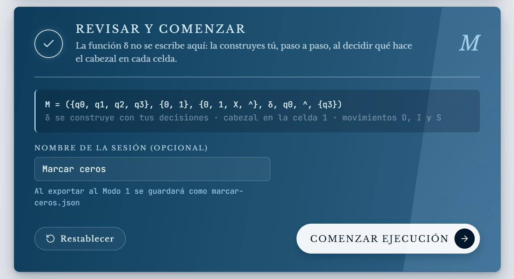
Arriba está el nombre de la sesión y la meta («Meta: llegar a q₃ o detenerte con S (paro)»). La pantalla reúne todo lo necesario para ejecutar a mano:
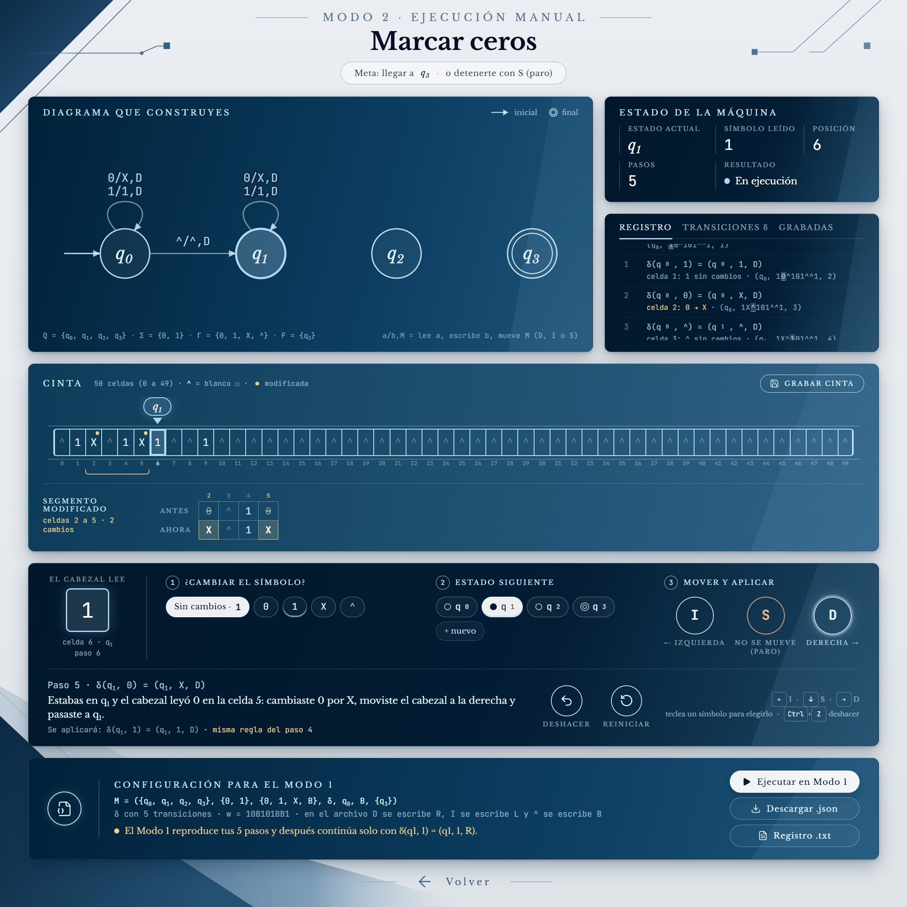
En cada paso el cabezal lee la celda donde está y el panel de decisión despliega las opciones para esa celda (punto 3 de la guía). Un paso se hace en tres partes:
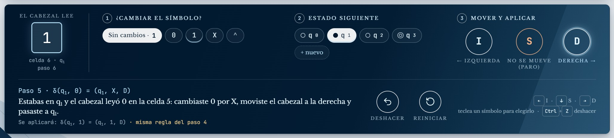
Al pasar el ratón sobre un movimiento se ve qué se aplicará, por ejemplo Se aplicará: δ(q1, 1) = (q1, 1, D) · misma regla del paso 4. Cuando el par (estado, símbolo) ya tiene una regla, sus opciones aparecen elegidas de antemano. Si se toma una decisión distinta para un par ya usado, el simulador avisa que la máquina dejó de ser determinista y sugiere deshacer el paso. Tampoco deja salir al cabezal de las celdas 0 a 49.
La cinta se redibuja con cada paso (punto 5 de la guía). Las celdas cuyo símbolo cambió llevan un punto amarillo y un corchete debajo marca el tramo modificado. En Segmento modificado se ven esas celdas Antes (como estaban al empezar) y Ahora, con el rango y el número de cambios.
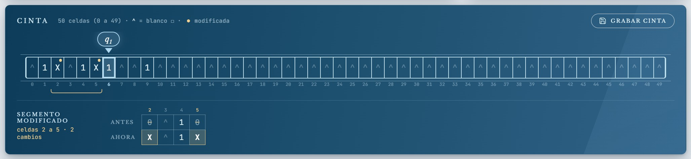
Deshacer quita el último paso (se puede repetir hasta el inicio) y Reiniciar borra todos los pasos y regresa a la cinta inicial, previa confirmación. Debajo de las opciones, un texto explica en palabras el último paso.
| Tecla | Acción en el sandbox |
|---|---|
| → | D: aplicar el paso moviendo a la derecha. |
| ← | I: aplicar el paso moviendo a la izquierda. |
| ↓ | S: aplicar el paso sin mover (estado de paro). |
| Un símbolo de Γ | Elegirlo como símbolo a escribir (por ejemplo, teclear X). |
| Esc | Volver a «Sin cambios». |
| Ctrl + Z o Retroceso | Deshacer el último paso. |
| R | Reiniciar la ejecución. |
El panel derecho tiene tres pestañas:
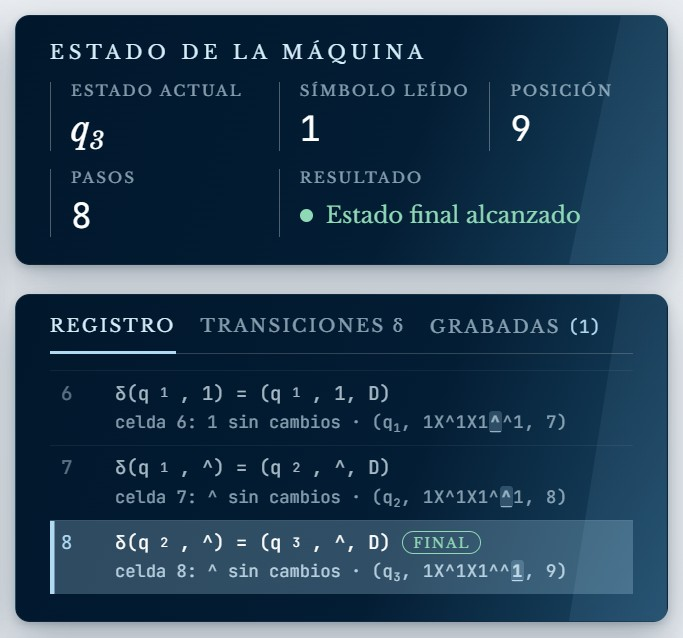
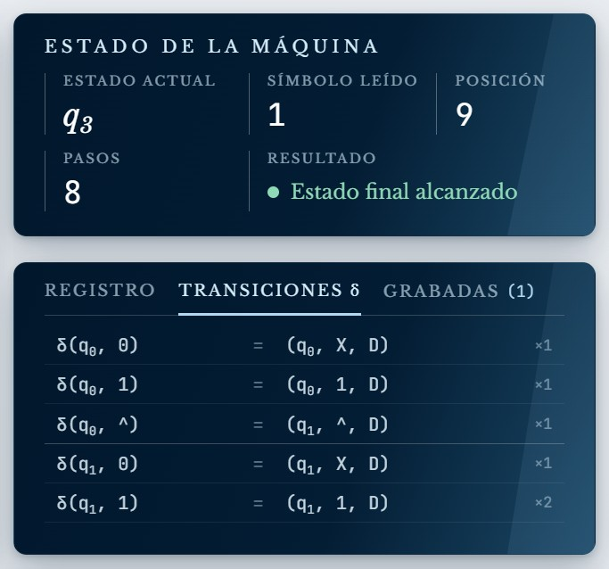
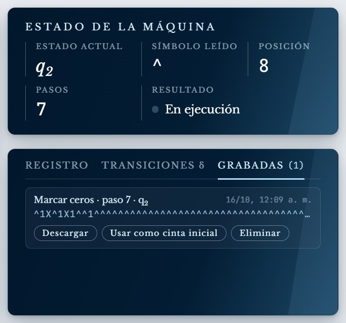
La ejecución manual termina de dos formas: al llegar al estado final elegido en la preparación (aviso «¡Llegaste al estado final q₃!» y resultado Estado final alcanzado) o al elegir S, que deja la máquina en estado de paro (Detenida con S). Después ya no se pueden aplicar pasos, pero sí deshacer, grabar la cinta o exportar.
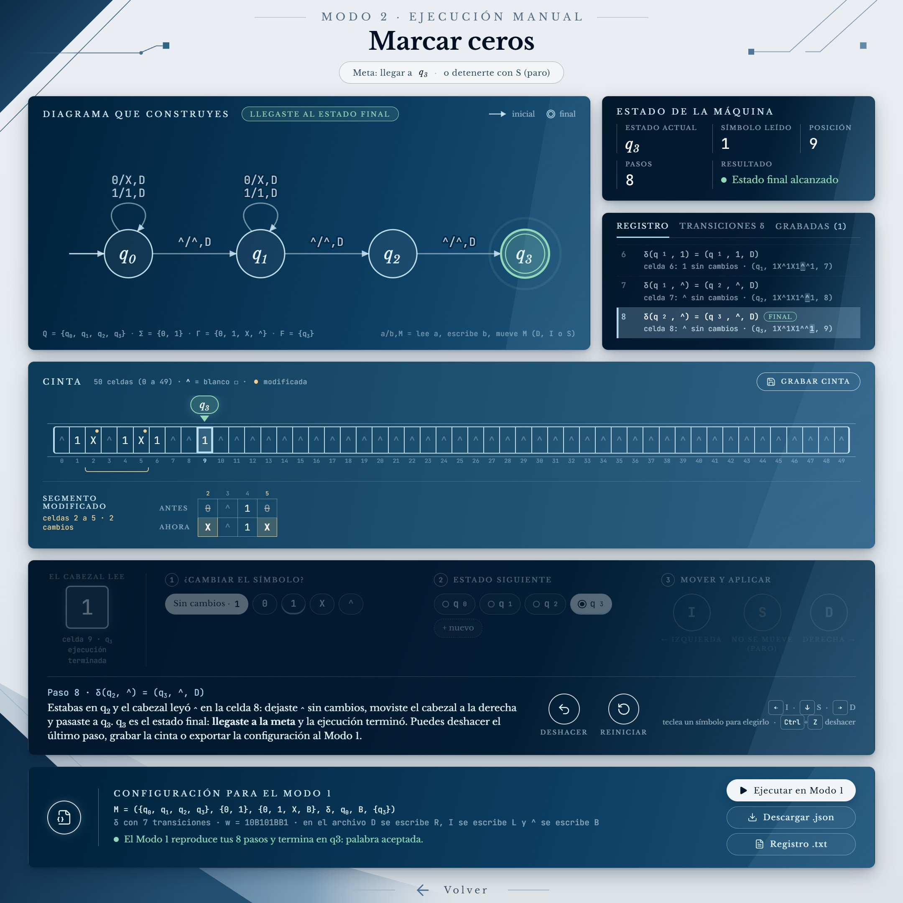
Cada paso del registro se convierte en una transición δ. El panel Configuración para el Modo 1 muestra la máquina resultante y una comprobación: el simulador ejecuta esa máquina con las reglas del Modo 1 y la compara paso a paso con la sesión (en verde si la reproduce completa; en amarillo, explicando la diferencia, si no). La palabra de entrada es el contenido de la cinta inicial desde la celda 1 hasta el último símbolo no blanco.
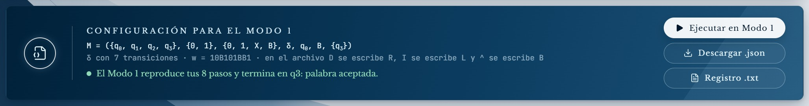
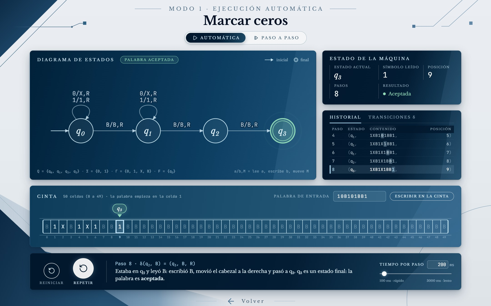
El archivo que descarga Registro .txt contiene los datos de la sesión, la tabla de movimientos con la terna de cada paso, el resultado, el segmento modificado y las transiciones registradas. Este es el de la sesión de ejemplo (recortado):
Sesión: Marcar ceros
Σ = {0, 1} Γ = {0, 1, X, ^} (^ = blanco □)
Q = {q0, q1, q2, q3} Estado inicial: q0 Estado final: q3
REGISTRO DE MOVIMIENTOS Y CAMBIOS
Paso Estado Celda Lee Escribe Mov Nuevo Terna (estado, contenido, posición)
0 — — — — — q0 (q0, 10^101^^1, 1)
1 q0 1 1 1 D q0 (q0, 10^101^^1, 2)
2 q0 2 0 X * D q0 (q0, 1X^101^^1, 3)
3 q0 3 ^ ^ D q1 (q1, 1X^101^^1, 4)
…
8 q2 8 ^ ^ D q3 (q3, 1X^1X1^^1, 9)
(* = la celda cambió de símbolo)
Resultado: Llegó al estado final q3 en 8 pasos.
SEGMENTO MODIFICADO (celdas 2 a 5, 2 cambios)
antes: 0 ^ 1 0
ahora: X ^ 1 X
TRANSICIONES REGISTRADAS (δ)
δ(q0, 1) = (q0, 1, D) pasos: 1
δ(q0, 0) = (q0, X, D) pasos: 2
δ(q1, 1) = (q1, 1, D) pasos: 4, 6
…
En el Modo 1: D se escribe R, I se escribe L y el blanco ^ se escribe B.
PROYECTO AUTÓMATAS/ ├── INICIAR.bat Abre el servidor local y el navegador (puerto 5577) ├── LEEME.txt Instrucciones rápidas ├── index.html Menú principal (con styles.css y script.js) ├── formulario/ │ ├── configuracion.* Nueva configuración del Modo 1 (formulario) │ └── maquina.js Objeto MT: validación, formato .json, guardado ├── modo1/ │ ├── automatico.* Inicio del Modo 1: Opción 1 y Opción 2 │ └── Simulacion/simulacion.* Simulación gráfica (automática y paso a paso) ├── modo2/ │ ├── manual.* Preparación: alfabeto, estados, cinta inicial │ ├── sesion.js Objeto MANUAL: sesión, registro, exportación │ └── Sandbox/sandbox.* Ejecución manual paso a paso ├── ejemplos/ejemplo-0n1n.json Máquina de ejemplo para «Cargar configuración» ├── herramientas/servidor.ps1 Servidor local en PowerShell ├── .vscode/settings.json Puerto 5510 para Live Server └── docs/ Este manual (PDF) y su fuente
Cada pantalla tiene su propio .html, .css y .js. La lógica común está en dos módulos que comparten las pantallas:
Una configuración se guarda como texto JSON. El mismo formato sirve para el formulario, para «Cargar configuración» y para lo que exporta el Modo 2. Este es el ejemplo incluido, ejemplos/ejemplo-0n1n.json (recortado):
{
"nombre": "Lenguaje 0ⁿ1ⁿ",
"estados": ["q0", "q1", "q2", "q3", "q4"], // Q
"alfabetoEntrada": ["0", "1"], // Σ
"alfabetoCinta": ["0", "1", "X", "Y", "B"], // Γ
"estadoInicial": "q0", // q₀
"blanco": "B", // B
"estadosFinales": ["q4"], // F
"transiciones": [ // δ(estado, lee) = (nuevoEstado, escribe, mueve)
{ "estado": "q0", "lee": "0", "nuevoEstado": "q1", "escribe": "X", "mueve": "R" },
{ "estado": "q1", "lee": "1", "nuevoEstado": "q2", "escribe": "Y", "mueve": "L" },
…
{ "estado": "q3", "lee": "B", "nuevoEstado": "q4", "escribe": "B", "mueve": "R" }
],
"palabra": "0011" // w
}
| Decisión | Motivo |
|---|---|
| Blanco ^ (Modo 2) → B (Modo 1) | La guía usa ^ como blanco en el Modo 2 y B en la definición formal del Modo 1. Al exportar, cada ^ se escribe B. En el Modo 1 el blanco es fijo para que todas las configuraciones sean compatibles. |
| Movimientos D / I → R / L | El Modo 2 usa D, I y S como pide la guía; el Modo 1 usa la notación formal D ∈ {R, L, S}. Al exportar, D se escribe R e I se escribe L (S queda igual). Al cargar un archivo también se aceptan D e I. |
| Cinta de 50 celdas (0 a 49) | La guía pide simular la cinta con 50 celdas. La palabra empieza en la celda 1 para que la celda 0 quede en blanco a la izquierda, por eso caben 49 símbolos. Si una transición saca al cabezal de la cinta, la ejecución termina con «Fuera de la cinta». |
| Máquina determinista | Cada par (estado, símbolo) tiene a lo sumo una transición. El formulario no deja guardar pares repetidos y el sandbox avisa si una decisión contradice otra anterior; la exportación se bloquea hasta deshacer el conflicto. |
| Aceptar al entrar a un estado final | La máquina se detiene y acepta en cuanto entra a un estado de F; se detiene y rechaza si no hay transición para el par actual. |
| Límite de 2000 pasos | Evita que una máquina que nunca se detiene congele la página («Sin detenerse»). |
| Sesión manual = lista de decisiones | El Modo 2 guarda solo lo que el usuario decidió en cada paso; el estado, la celda y la cinta se recalculan repitiendo los pasos. Así deshacer es exacto y el registro, la función δ y la exportación siempre coinciden. |
| Comprobación con el Modo 1 | Antes de exportar se ejecuta la máquina con las reglas del Modo 1 para confirmar que reproduce la sesión manual. |
| Datos en el navegador | La máquina actual pasa entre pantallas con sessionStorage (dura lo que la pestaña); las cintas grabadas usan localStorage (quedan entre visitas). Lo permanente se descarga como archivo .json o .txt. |
| Requisito de la guía | Dónde se cumple |
|---|---|
| Elegir configuración nueva o guardada | Inicio del Modo 1, Opción 1 (4.1) |
| Buscar una configuración guardada | «Cargar configuración» (4.3) |
| Dejar guardada una configuración nueva | «Guardar configuración» descarga el .json (4.2) |
| Configuración: Q, Σ, Γ, B, q₀, F, δ y palabra | Formulario de cinco secciones (4.2) |
| No ejecutar sin configuración previa | «Ejecutar» bloqueada con aviso (4.1) |
| Cinta de 50 celdas y cabezal resaltado | Panel de cinta de la simulación (4.4) |
| Pausar, reanudar y ajustar milisegundos | Ejecutar / Pausar / Reanudar; 100 a 3000 ms (4.5) |
| Historial de la terna en tiempo real | Pestaña «Historial» (4.4) |
| Modo 2 · 1. Alfabeto y cinta al azar con ^ | Preparación, secciones 01 y 03 (5.1) |
| Modo 2 · 2. Estado final o estado de paro | Estado final (meta) y movimiento S (5.1, 5.7) |
| Modo 2 · 3. Movimientos D, I y S | Panel de decisión, parte 3 (5.3) |
| Modo 2 · 4. Cambiar símbolo o sin cambios | Panel de decisión, parte 1 (5.3) |
| Modo 2 · 5. Cinta y segmento modificado | Marcas en la cinta y tabla Antes / Ahora (5.4) |
| Modo 2 · 6. Grabar la cinta | «Grabar cinta» y pestaña «Grabadas» (5.6) |
| Modo 2 · 7. Registro usable en el Modo 1 | Registro, «Ejecutar en Modo 1» y .json (5.6, 5.8) |
El código fuente completo del simulador se guarda en el drive compartido del grupo:
| No. | Nombre completo | Carné |
|---|---|---|
| 1 | ||
| 2 | ||
| 3 | ||
| 4 |
FechasEntrega en plataforma: domingo 8 de noviembre de 2026. Presentación: martes 10 o jueves 12 de noviembre de 2026.
| Problema | Solución |
|---|---|
| La página no carga | Ábrelo con INICIAR.bat y deja la ventana negra abierta. Con Live Server usa el puerto 5510, no el 5500 (sección 2.3). |
| «Ejecutar» está bloqueada | Primero crea una configuración nueva o carga un archivo .json (4.1). |
| Error al cargar un .json | El aviso indica qué dato está mal. El archivo debe tener el formato de la sección 6.3. |
| No aparece el archivo descargado | Revisa la carpeta Descargas y que el navegador permita descargas desde localhost. |
| Se perdió la máquina al cerrar la pestaña | La máquina en uso dura lo que la pestaña; ábrela otra vez con «Cargar configuración» desde su .json. |